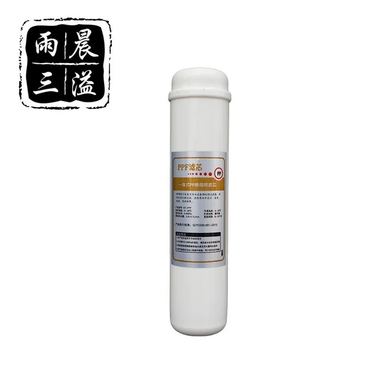

Inline PP nogulšņu filtra kārtridžs
Inline filtrsInline PP kārtridžs ar polipropilēna filtrējošo materiālu un 5 μm nominālo pakāpi. Savienojums, plūsmas virziens un sistēmas pozīcija jāsaskaņo pirms pasūtījuma.
Konfigurācijas kopsavilkums
Precīzu komplektāciju apstiprinām pēc konkrētā modeļa un pieprasījuma.
← Produkti
Inline PP nogulšņu filtra kārtridžs specifikācija
| Filtrējošais materiāls | polipropilēns |
|---|---|
| Nominālā filtrācijas pakāpe | 5 μm |
Faktu robežas
Tabulā ir tikai šim produktam apstiprināti dati. Nenorādītas īpašības jāapstiprina rakstiskajā tehniskajā piedāvājumā.
Konfigurācijas pārbaude
Produkta “Inline PP nogulšņu filtra kārtridžs” pasūtījuma pārbaudi sāk ar lapā norādītajiem identifikācijas datiem: filtrējošais materiāls: polipropilēns; nominālā filtrācijas pakāpe: 5 μm. Šie dati jāvērtē kopā ar sistēmas uzstādīšanas vietu un pircēja iesniegto informāciju; līdzīgs fotoattēls vai vispārīgs produkta nosaukums nav pietiekams savietojamības apliecinājums. Pirms cenas salīdzināšanas jāsaskaņo šāda informācija: Norādiet savienojumu, vajadzīgo 5 μm konfigurāciju, daudzumu, marķējumu un iepakojumu. Pēc šo datu saņemšanas var nošķirt standarta komplektāciju no pielāgotas versijas un sagatavot tehniski salīdzināmu piedāvājumu. Šajā lapā nenorādīti skaitliskie parametri nav uzskatāmi par apstiprinātu specifikāciju.
Izvēle, savietojamība un apkope
Ko pārbaudīt
Pārbaudiet 5 μm nominālo pakāpi, inline savienojumu, plūsmas virzienu un vietu priekšfiltrācijas secībā.
Apkope un piedāvājums
Nomaiņu nosaka nogulšņu slodze un plūsmas izmaiņas; pirms maiņas aizveriet ūdens padevi.
Norādiet savienojumu, vajadzīgo 5 μm konfigurāciju, daudzumu, marķējumu un iepakojumu.
Inline PP nogulšņu filtra kārtridžs pircēju jautājumi
Kādi dati ir apstiprināti produktam “Inline PP nogulšņu filtra kārtridžs”?
Šajā lapā ir apstiprināts: filtrējošais materiāls: polipropilēns; nominālā filtrācijas pakāpe: 5 μm. Citas iespējas jāpārbauda konkrētajā piedāvājumā.
Kā izvēlēties un uzturēt produktu “Inline PP nogulšņu filtra kārtridžs”?
Pārbaudiet 5 μm nominālo pakāpi, inline savienojumu, plūsmas virzienu un vietu priekšfiltrācijas secībā. Nomaiņu nosaka nogulšņu slodze un plūsmas izmaiņas; pirms maiņas aizveriet ūdens padevi.
Kas vajadzīgs piedāvājumam par produktu “Inline PP nogulšņu filtra kārtridžs”?
Norādiet savienojumu, vajadzīgo 5 μm konfigurāciju, daudzumu, marķējumu un iepakojumu.
Pieprasīt piedāvājumu: Inline PP nogulšņu filtra kārtridžs
Norādiet savienojumu, vajadzīgo 5 μm konfigurāciju, daudzumu, marķējumu un iepakojumu.